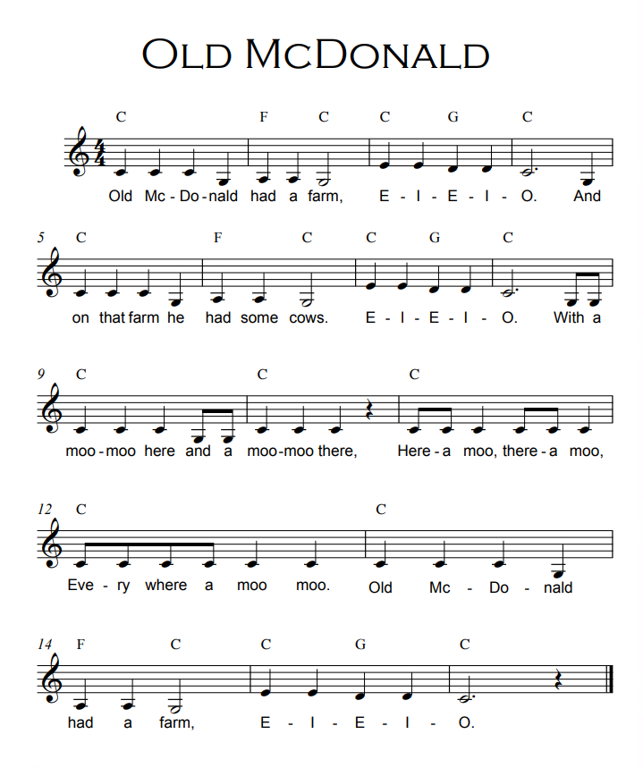

Do It! Skoog: Count the Beats
 The Challenge
The Challenge
Your challenge is to use Skoog to play musical notes and simple compositions. Then, compose a song using whole numbers and fractional beats. You will add the whole and fractional beats, and then decompose each line of music into a sum of fractions. Skoog is a customizable electronic musical instrument and programmable control device.
Project Steps
-
Practice Old MacDonald
-
Practice Row Row Row Your Boat
-
Practice Another Song
-
Compose a Song
Practice Old MacDonald
To practice a song, click the Songbook icon in the menu bar at the top of the app. Scroll down and select “Old MacDonald” from the list. Follow the colored pattern using your Skoog to play the notes. Each color is a different note. Each note has its own beat. The beats are shown by the size of the colored notes. What do you notice about the music notes? How are the 5 notes represented? Try singing along while you play!

Old MacDonald Had a Farm Sheet Music
Take a look at the sheet music. As you play, notice that the beats are fractions.
- Most of the notes are one beat.
- “Farm” and “cow” are two beats. These notes are double the size of the single beats. This means you hold each note for two beats.
- “O” is three beats. Hold this note for three whole beats.
- “With a” and “and a” are half beats. You need to play these two times faster to make up one beat. (½ + ½ = 1)
- Look at the last line. “Here a,” “there a,” and “ev- -very- -where a” are all half beats. Two of these make up one whole beat.
Add up the whole number and fractional beats in each line, represented as an equation. Each measure totals four beats. Each line totals eight beats.
- For example, line 1 would be 1 + 1 + 1 + 1 + 1 + 1 + 2 = 8
Decompose each line into a sum of fractions with the same denominator, represented as an equation.
- For example, line 1 could be 8/8 + 8/8 + 8/8 + 8/8 + 8/8 + 8/8 + 8/8 + 16/8 = 8
- Line 1 can also be 2/2 + 2/2 + 2/2 + 2/2 + 2/2 + 2/2 + 2/2 + 4/2 = 16/2
- How else could you decompose line 1?
Practice Row Row Row Your Boat
Now open Row Row Row Your Boat Sheet Music and try playing “Row, Row, Row Your Boat.” What do you notice about the music notes? How are the 5 notes represented? Try singing along while you play!
This song has a new fraction.
- Each line has four beats.
- In the second line, “down the” has one full beat. But “down” is ⅔ and “the” is ⅓ of one whole beat.
- In the third line, every note has three beats. Every beat is ⅓ of one whole beat.
Add up the whole number and fractional beats in each line, represented as an equation.
Decompose each line into a sum of fractions with the same denominator, represented as an equation.
Practice Another Song
Pick a different song to play. Try changing the instrument.
Figure out the beats of the new song. Is each note one beat? Are there notes that are two beats long? Are there notes that are half a beat long?
Add up the whole number and fractional beats in each line, represented as an equation.
Decompose each line into a sum of fractions with the same denominator, represented as an equation.
Compose a Song
Now, compose your own song.
- Decide out how many beats will make up each line of your song.
- Play just one line at a time.
- Write down the colors (notes) as you go.
- Write the number of beats represented by each note. Include fractional beats.
- Change one or more whole beats into a sum of fractional beats. For example, instead of playing one beat, change it to two half-beats or four quarter-beats.
- Challenge yourself! Can you change one or more whole notes into a sum of fractional beats with denominators of 3, 5, or 6?
- Take a picture of your composition (colors and beats). Be sure to show the whole beats and the fraction beats.